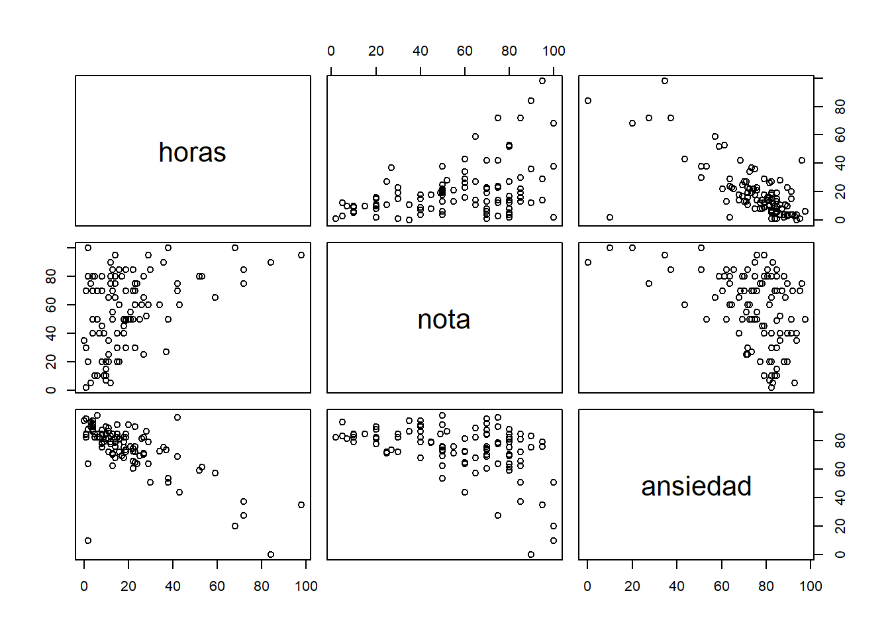
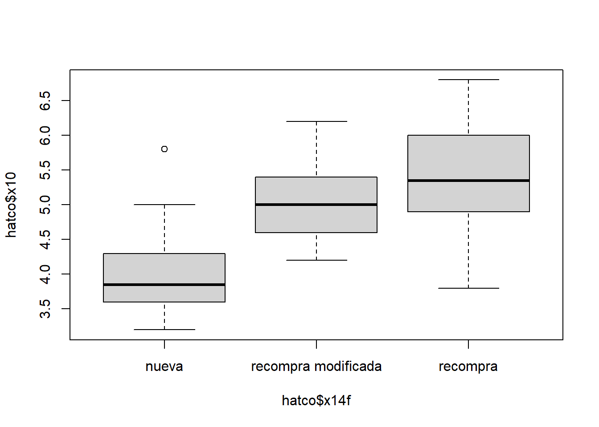
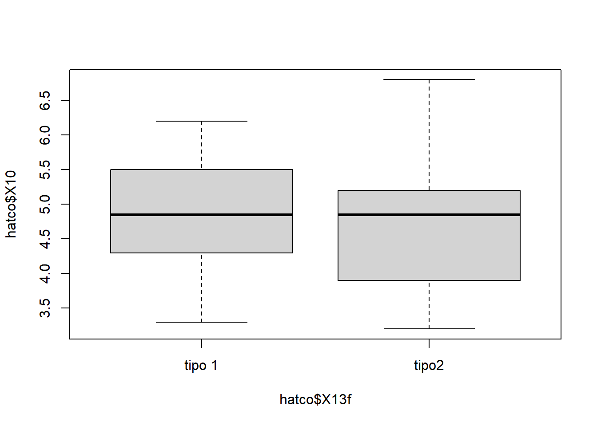

Parte 6 Inferencia - Sesiones 1 y 2
El siguiente documento muestra todos los cálculos estadísticos que entre la primera y la segunda sesión de la asignatura Técnicas multivariantes en Investigación de Mercados dentro del máster oficial en Marketing e Investigación de mercados se observan. Este documento intenta ser una guía ilustrativa y demostrativa de como se trabaja con R, magnificando todas las virtudes de este software.
x <- gssft1$hrs1 ## asociamos a vector para no repetir el nombre de variable6.1 Inferencia paramétrica
Pruebas inferenciales realizadas con variables que cumplen los crirerios de nromalidad y/o homoscedasticidad.
6.1.1 Test t Student para la media de una muestra
test_t <- t.test(
x,
mu = 40, ## debe ser un parámetro abierto, es el valor de control
na.rm = TRUE,
alternative = "two.sided", ## alternativas cerradas: "two.sided", "less", "greater"
paired = FALSE,
var.equal = FALSE, ## alternativas TRUE / FALSE
conf.level = 0.95) ## se deben dar alternativas 0.90, 0.95, 0.9545, 0.99, 0.9975
print(test_t)
One Sample t-test
data: x
t = 14.069, df = 438, p-value < 2.2e-16
alternative hypothesis: true mean is not equal to 40
95 percent confidence interval:
46.22201 48.24268
sample estimates:
mean of x
47.23235 6.1.2 Test t Student para la media de una muestra en grupos independientes
El test puede hacerse con varianzas iguales o diferentes, x con z, varianzas iguales / diferentes; para saber si optamos por una u otra opción hacemos el test de Levene; este test necesita que la variable de grupos sea no numérica, por lo que creamos un factor para ella.
- si la probabilidad es mayor que 0.05, escogemos la prueba t de varianzas iguales;
- si la probabilidad es menor o igual que 0.05, escogemos la prueba t de varianzas distintas;
- atención si el nivel de confianza es 0.95, el valor de comparación de Levene es 1-0.95=0.05
6.1.2.1 Varianzas iguales
x <- gssnet2$emailhrs
y <- gssnet2$webhrs
z <- gssnet2$sex
z <- factor(z, labels = c("hombre", "mujer"))
output.levene <- leveneTest(x ~ z, data = gssnet2, center = mean)
print(output.levene)Levene's Test for Homogeneity of Variance (center = mean)
Df F value Pr(>F)
group 1 0.5016 0.479
982 conflevel = 0.95 ## se deben dar alternativas 0.90, 0.95, 0.9545, 0.99, 0.9975
pctrl = 1 - conflevel ## cálculo del valor de control
test_true <- t.test(
x ~ z, ## atención al cambo, desaparace mu y cambia la forma de X que es formula x ~ z
na.rm = TRUE,
alternative = "two.sided", ## alternativas cerradas: "two.sided", "less", "greater"
paired = FALSE,
var.equal = TRUE,
conf.level = conflevel)
print(test_true)
Two Sample t-test
data: x by z
t = 0.20832, df = 982, p-value = 0.835
alternative hypothesis: true difference in means between group hombre and group mujer is not equal to 0
95 percent confidence interval:
-0.9158859 1.1334347
sample estimates:
mean in group hombre mean in group mujer
3.371057 3.262282 t1 <- test_true[["statistic"]][["t"]]
print(t1)[1] 0.2083198df1 <- test_true[["parameter"]][["df"]]
print(df1)[1] 982effect.size.true <- sqrt((t1 ^ 2) / ((t1 ^ 2) + df1))
print(effect.size.true)[1] 0.0066476066.1.2.2 Varianzas no iguales
test_false <- t.test(
x ~ z,
na.rm = TRUE,
alternative = "two.sided",
paired = FALSE,
var.equal = FALSE,
conf.level = conflevel)
print(test_false)
Welch Two Sample t-test
data: x by z
t = 0.20682, df = 893.88, p-value = 0.8362
alternative hypothesis: true difference in means between group hombre and group mujer is not equal to 0
95 percent confidence interval:
-0.9234377 1.1409865
sample estimates:
mean in group hombre mean in group mujer
3.371057 3.262282 t2 <- test_false[["statistic"]][["t"]]
print(t2)[1] 0.2068209df2 <- test_false[["parameter"]][["df"]]
print(df2)[1] 893.8837## calculo del efecto
effect.size.false <- sqrt((t2 ^ 2) / ((t2 ^ 2) + df2))
print(effect.size.false)[1] 0.006917416.1.3 Test t Student para la media de una muestra en grupos dependientes
x <- endorph1$before
y <- endorph1$after
media <- mean(x - y, na.rm = TRUE)
print(media)[1] -18.73636desviacion <- sd(x - y, na.rm = TRUE)
print(desviacion)[1] 8.329739errormedia <- sd(x - y, na.rm = TRUE) / (sqrt(length(x)))
print(errormedia)[1] 2.511511int_inf <- media - (2 * errormedia)
print(int_inf)[1] -23.75939int_sup <- media + (2 * errormedia)
print(int_sup)[1] -13.71334lillieforsx <- lillie.test(x) ## kolgomorov-smirnov con la correción de lilliefors
print(lillieforsx)
Lilliefors (Kolmogorov-Smirnov) normality test
data: x
D = 0.17365, p-value = 0.4668lillieforsy <- lillie.test(y)
print(lillieforsy)
Lilliefors (Kolmogorov-Smirnov) normality test
data: y
D = 0.12988, p-value = 0.87shapirox <- shapiro.test(x) ## shapiro - wilk
print(shapirox)
Shapiro-Wilk normality test
data: x
W = 0.86876, p-value = 0.07472shapiroy <- shapiro.test(y)
print(shapiroy)
Shapiro-Wilk normality test
data: y
W = 0.96441, p-value = 0.8252test <- t.test(
x,
y,
na.rm = TRUE,
alternative = "two.sided", ## alternativas cerradas: "two.sided", "less", "greater"
paired = TRUE, ## nótese que aquí es TRUE porque estamos en muestras pareadas
conf.level = 0.95)
print(test)
Paired t-test
data: x and y
t = -7.4602, df = 10, p-value = 2.159e-05
alternative hypothesis: true difference in means is not equal to 0
95 percent confidence interval:
-24.33236 -13.14037
sample estimates:
mean of the differences
-18.73636 ## cálculo del efecto tamaño
t3 <- test[["statistic"]][["t"]]
print(t3)[1] -7.460197df3 <- test[["parameter"]][["df"]]
print(df3)[1] 10effect_size3 <- sqrt((t3 ^ 2) / ((t3 ^ 2) + df3))
print(effect_size3)[1] 0.92069956.1.4 Correlación paramétrica de Pearson
## correlaciones
x <- anxiety$horas
y <- anxiety$nota
z <- anxiety$ansiedad
pearson.1 <- cor.test(
x,
y,
alternative = "two.sided",## alternativas cerradas: "two.sided", "less", "greater"
method = "pearson",## alternativas cerradas: "pearson", "kendall", "spearman"
exact = NULL,
conf.level = 0.95,
continuity = FALSE)
print(pearson.1)
Pearson's product-moment correlation
data: x and y
t = 4.3434, df = 101, p-value = 3.343e-05
alternative hypothesis: true correlation is not equal to 0
95 percent confidence interval:
0.2200938 0.5481602
sample estimates:
cor
0.3967207 anxiety.filter <- select(anxiety, horas, nota, ansiedad)
## p.coef <-cor(anxiety.filter, use = "complete.obs", method = "pearson")
## p.cor <- cor(anxiety.filter, use = "pairwise.complete.obs")
p.pvalue <- rcorr(as.matrix(anxiety.filter), type = "pearson") ## se obtiene la matriz de correlación
p.pvalue[["r"]] ## matriz de correlación horas nota ansiedad
horas 1.0000000 0.3967207 -0.7092493
nota 0.3967207 1.0000000 -0.4409934
ansiedad -0.7092493 -0.4409934 1.0000000p.pvalue[["n"]] ## pares analizados horas nota ansiedad
horas 103 103 103
nota 103 103 103
ansiedad 103 103 103p.pvalue[["P"]] ## pvalue de los coeficientes horas nota ansiedad
horas NA 3.343451e-05 0.000000e+00
nota 3.343451e-05 NA 3.127873e-06
ansiedad 0.000000e+00 3.127873e-06 NAplot(anxiety.filter) ## se obtiene el gráfico de dispersión
6.1.5 Análisis de varianza de un factor (vía)
Nota: la variable de grupos ha de ser factor; si no es así no funciona el análisis.
hatco$x14f <- factor(hatco$x14, labels = c("nueva", "recompra modificada", "recompra"))
hatco$x13f <- factor(hatco$x13, labels = c("tipo 1", "tipo2"))
boxplot(hatco$x10 ~ hatco$x14f, col = "lightgray")
boxplot(hatco$x10 ~ hatco$x13f, col = "lightgray")
anova1 <- aov(hatco$x10 ~ hatco$x14f)
print(anova1)Call:
aov(formula = hatco$x10 ~ hatco$x14f)
Terms:
hatco$x14f Residuals
Sum of Squares 39.0068 33.4591
Deg. of Freedom 2 97
Residual standard error: 0.5873152
Estimated effects may be unbalancedsummary(anova1) Df Sum Sq Mean Sq F value Pr(>F)
hatco$x14f 2 39.01 19.503 56.54 <2e-16 ***
Residuals 97 33.46 0.345
---
Signif. codes: 0 '***' 0.001 '**' 0.01 '*' 0.05 '.' 0.1 ' ' 1model.tables(anova1, "means")Tables of means
Grand mean
4.771
hatco$x14f
nueva recompra modificada recompra
3.929 5.003 5.394
rep 34.000 32.000 34.0006.1.6 Análisis de varianza de dos factores (vías)
anova2 <- aov(hatco$x10 ~ hatco$x14f + hatco$x13f)
print(anova2)Call:
aov(formula = hatco$x10 ~ hatco$x14f + hatco$x13f)
Terms:
hatco$x14f hatco$x13f Residuals
Sum of Squares 39.00680 0.85383 32.60527
Deg. of Freedom 2 1 96
Residual standard error: 0.5827849
Estimated effects may be unbalancedsummary(anova2) Df Sum Sq Mean Sq F value Pr(>F)
hatco$x14f 2 39.01 19.503 57.424 <2e-16 ***
hatco$x13f 1 0.85 0.854 2.514 0.116
Residuals 96 32.61 0.340
---
Signif. codes: 0 '***' 0.001 '**' 0.01 '*' 0.05 '.' 0.1 ' ' 1model.tables(anova2, "means")Tables of means
Grand mean
4.771
hatco$x14f
nueva recompra modificada recompra
3.929 5.003 5.394
rep 34.000 32.000 34.000
hatco$x13f
tipo 1 tipo2
4.863 4.679
rep 50.000 50.0006.2 Inferencia no paramétrica
6.2.1 Prueba Chi
6.2.1.1 Prueba Chi2 de una muestra
El test chi2 para una muestra, compara los resultados de una distribución marginal con los resultados proporcionados de forma externa.
x <- c(28, 47, 80, 82, 47, 35)
y <- c(30, 50, 75, 75, 50, 30)
chisq000 <- chisq.test(x, p = y, rescale.p = TRUE)
print(chisq000)
Chi-squared test for given probabilities
data: x
X-squared = 1.9941, df = 5, p-value = 0.856.2.1.2 Prueba Chi2 de una tabla
tabla001 <- table(data2$freedman, data2$sex)
print(tabla001)
Male Female
Don't know 28 36
No Answer 1 10
Allowing people freedom of expression/tolerate bad manners 268 232
Enforcing good manners/limit freedom of expression 195 240chisq001 <- chisq.test(tabla001, correct = FALSE) ## prueba chi2 de tabla sin corrección de continuidad de Yates (solo en 2*2)
print(chisq001)
Pearson's Chi-squared test
data: tabla001
X-squared = 14.951, df = 3, p-value = 0.001859chisq002 <- chisq.test(tabla001, correct = TRUE) ## prueba chi2 de tabla con corrección de continuidad, como es 2*2 aplica por defecto, si no fuera 2*2 no aplica la corrección
print(chisq002)
Pearson's Chi-squared test
data: tabla001
X-squared = 14.951, df = 3, p-value = 0.0018596.2.1.3 Otros test derivados
otros <- assocstats(tabla001)
print(otros) X^2 df P(> X^2)
Likelihood Ratio 16.138 3 0.0010623
Pearson 14.951 3 0.0018586
Phi-Coefficient : NA
Contingency Coeff.: 0.121
Cramer's V : 0.122 6.2.2 Correlaciones no paramétricas
6.2.2.1 Correlación de Spearman
x <- grades$Estadística
y <- grades$Selectivo
spearman.1 <- cor.test(
x,
y,
alternative = "two.sided",
method = "spearman",
exact = NULL,
conf.level = 0.95,
continuity = FALSE)6.2.2.2 Correlación de Kendall
tau.b.kendall.1 <- cor.test(
x,
y,
alternative = "two.sided",
method = "kendall",
exact = NULL,
conf.level = 0.95,
continuity = FALSE)6.2.3 Test de diferencias de una muestra en grupos independientes
Probamos la normalidad de los grupos a comparar. Probamos la normalidad de cada grupo en cada variable y una vez probado que existen problemas de normalidad en algunos de los grupos, calculamos la prueba W de Wilcoxon.
6.2.3.1 Lilliefors y Shapiro-Wilk
x <- bdi$sunbdi
y <- bdi$wedbdi
z <- bdi$droga
bdi.filter <- filter (bdi, bdi$droga == 1)
es <- bdi.filter$sunbdi ## alcohol domingo
bdi.filter <- filter (bdi, bdi$droga == 2)
as <- bdi.filter$sunbdi ## extasis domingo
bdi.filter <- filter (bdi, bdi$droga == 1)
ew <- bdi.filter$wedbdi ## alcohol miercoles
bdi.filter <- filter (bdi, bdi$droga == 2)
aw <- bdi.filter$wedbdi ## extasis miercoles
rm(bdi.filter)
lillie.sun.1 <- lillie.test(es)
print(lillie.sun.1)
Lilliefors (Kolmogorov-Smirnov) normality test
data: es
D = 0.27585, p-value = 0.02986shap.sun.1 <- shapiro.test(es)
print(shap.sun.1)
Shapiro-Wilk normality test
data: es
W = 0.81064, p-value = 0.01952lillie.sun.2 <- lillie.test(as)
print(lillie.sun.2)
Lilliefors (Kolmogorov-Smirnov) normality test
data: as
D = 0.16992, p-value = 0.5687shap.sun.2 <- shapiro.test(as)
print(shap.sun.2)
Shapiro-Wilk normality test
data: as
W = 0.95947, p-value = 0.7798lillie.wed.1 <- lillie.test(ew)
print(lillie.wed.1)
Lilliefors (Kolmogorov-Smirnov) normality test
data: ew
D = 0.23469, p-value = 0.1226shap.wed.1 <- shapiro.test(ew)
print(shap.wed.1)
Shapiro-Wilk normality test
data: ew
W = 0.94114, p-value = 0.5658lillie.wed.2 <- lillie.test(aw)
print(lillie.wed.2)
Lilliefors (Kolmogorov-Smirnov) normality test
data: aw
D = 0.30502, p-value = 0.00894shap.wed.2 <- shapiro.test(aw)
print(shap.wed.2)
Shapiro-Wilk normality test
data: aw
W = 0.75347, p-value = 0.0039336.2.3.2 Prueba W de Wilcoxon - U Mann-Withney
Aunque la probabilidad no es exactamente la misma, es muy aproximada.
wilcox.test.1 <- wilcox.test(as, es, paired = FALSE, alternative = "two.sided", mu = 0, conf.int = 0.95)
print(wilcox.test.1)
Wilcoxon rank sum test with continuity correction
data: as and es
W = 35.5, p-value = 0.2861
alternative hypothesis: true location shift is not equal to 0
95 percent confidence interval:
-5.000069 1.000079
sample estimates:
difference in location
-1.000027 wilcox.test.2 <- wilcox.test(aw, ew, paired = FALSE, alternative = "two.sided", mu = 0, conf.int = 0.95)
print(wilcox.test.2)
Wilcoxon rank sum test with continuity correction
data: aw and ew
W = 4, p-value = 0.000569
alternative hypothesis: true location shift is not equal to 0
95 percent confidence interval:
-28.99996 -18.00005
sample estimates:
difference in location
-23.50122 6.2.4 Test de diferencias de una muestra en grupos dependientes
6.2.4.1 Prueba V de Wilcoxon
Atención, resultado de la prueba es suma de rangos negativos. no es el mismo resultado que SPSS el valor, pero si la probabilidad aproximada.
wilcox.test.3 <- wilcox.test(es, ew, paired = TRUE, alternative = "two.sided", mu = 0, conf.int = 0.99)
print(wilcox.test.3)
Wilcoxon signed rank test with continuity correction
data: es and ew
V = 0, p-value = 0.01403
alternative hypothesis: true location shift is not equal to 0
95 percent confidence interval:
-19.99999 -10.49998
sample estimates:
(pseudo)median
-15.67111 wilcox.test.4 <- wilcox.test(as, aw, paired = TRUE, alternative = "two.sided", mu = 0, conf.int = 0.99)
print(wilcox.test.4)
Wilcoxon signed rank test with continuity correction
data: as and aw
V = 47, p-value = 0.05248
alternative hypothesis: true location shift is not equal to 0
95 percent confidence interval:
-0.4999518 10.9999380
sample estimates:
(pseudo)median
7.499968